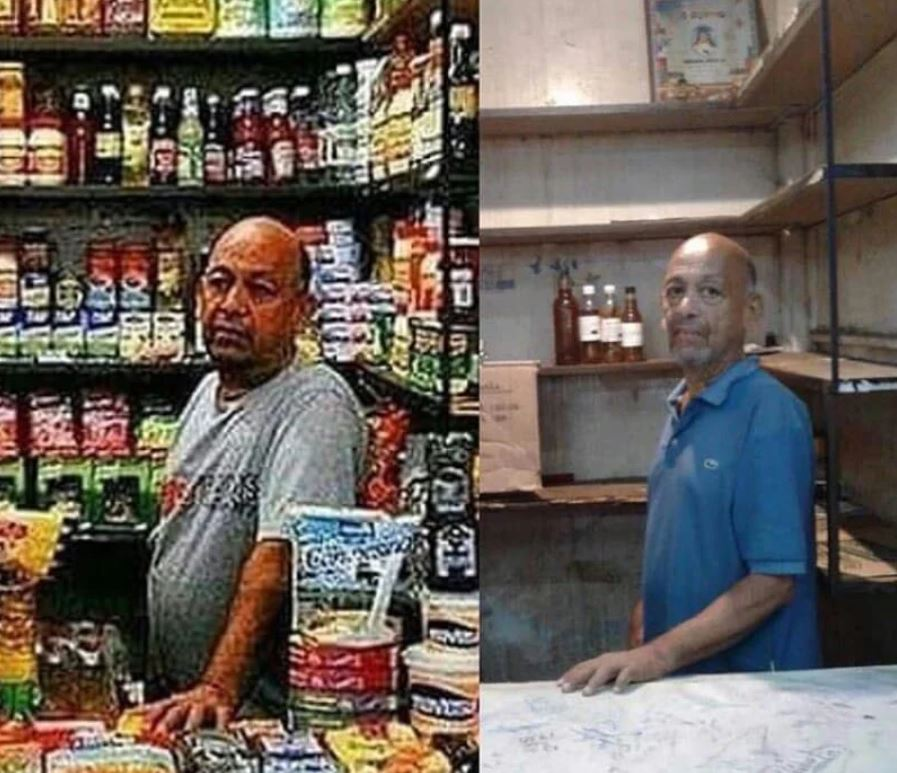
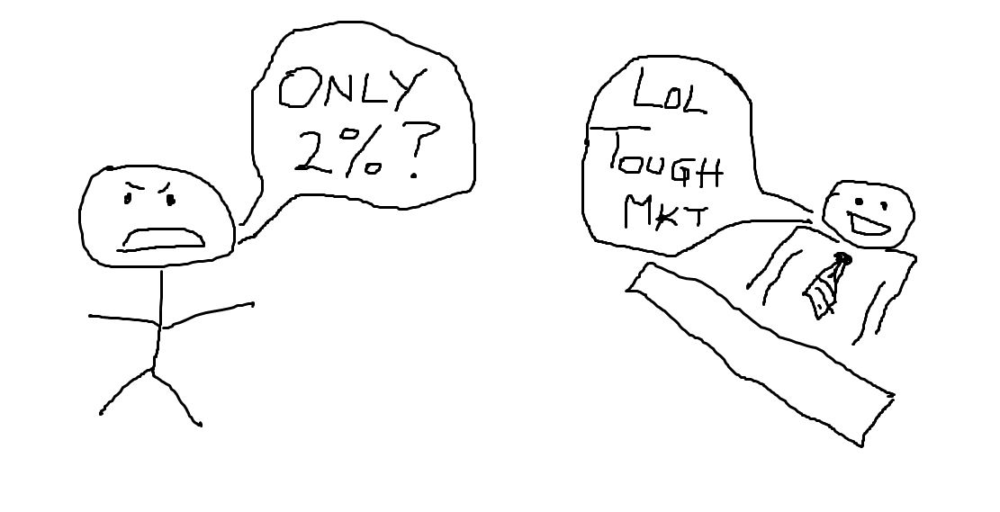
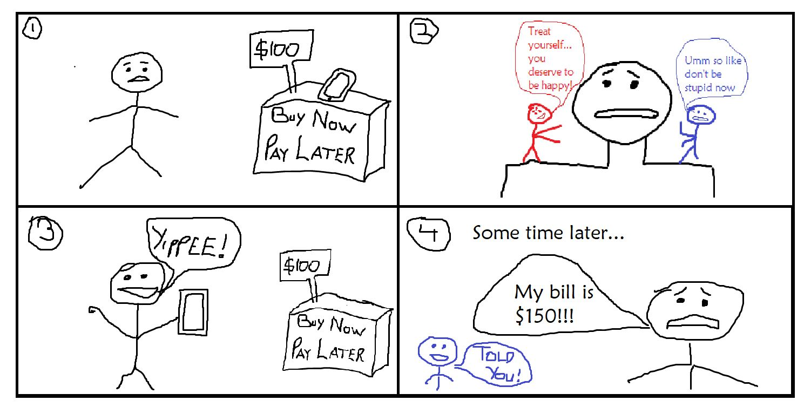
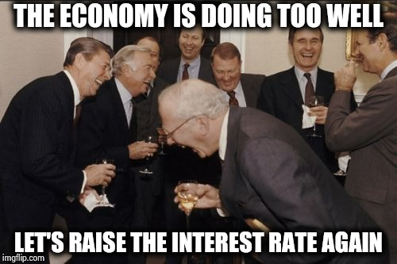
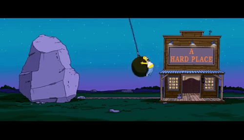
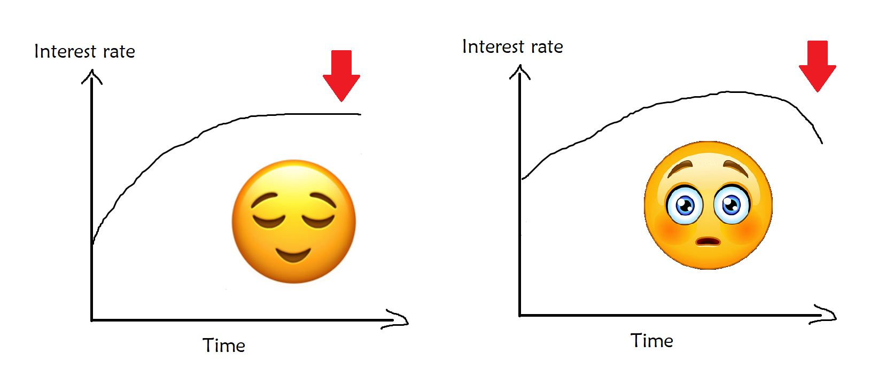
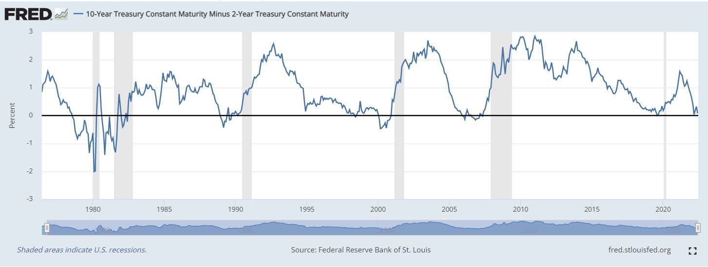

Recessions, inflation and interest rates
Thoughts on what's been going on
May-June 2022 has been…interesting. Inflation has been way higher than expected in countries all around the world, powers are responding by raising interest rates ) and US stock prices started falling like a ton of bricks. Recession fears are looming all over.
The thing is that fear is an emotion. And it makes a whole lot of sense that we’d be fearful of a recession. Bad recessions can end up like this:
Anyway, this isn’t meant to cry out doom. Focusing only on emotion and not on the reasons behind what’s going on is a recipe to get paranoid. This is also not meant to be a textbook—so we won’t be getting much into the big words that economists use when trying to figure out what’s going on. What we’ll do is break down of what’s been going on in the news: we’ll start with interest rates, then inflation, then how they come together in recessions. We’ll also weave in how that usually looks for everyday persons instead of how it looks on some confusing chart.
Let’s get straight into it.
Interest rates
When they hear “interest rate” many persons think of something like:
- “how much extra do I have to pay back if I borrow money”
- “how much extra do I get back if I lend out/invest money”
For the average person, that’s more than enough info. But if you’d like to know what interest rates have to do with the economy, inflation and recessions, that level of understanding can only go so far.
So…what is an interest rate?
There are lots of definitions. But in this case, I like to think of it as “the opportunity cost of current consumption.” Breaking that down:
- “opportunity cost” is just the next best thing you could use something for. If you spend a day at work or school—but you‘d 100% chill at the beach if you didn’t have to show up—then the opportunity cost of using your day to go to work/school is chilling at the beach.
- What if you prefer hiking/sleeping all day/binging a series over going to the beach? Fine. Your opportunity cost is a day of whatever you prefer. It’s the next best thing you could have done—and you get to decide what’s best for you.
- Current consumption means spending on goods and services NOW. Not tomorrow or anytime in the future, and not spending on investments that give a return sometime later. We’re talking about using up money that you won’t get back, right now.
What does this have to do with lending or borrowing money?
Here we have a stickman, let’s call him Bob. Bob is really big on current consumption. That’s why when Bob sees a phone for sale for $100, he against his better judgment decides to take it NOW instead of waiting until he has the money. That’s why instead of paying $100, he ended up paying $150. That higher price was just to get the phone now without having to pay anything upfront—so his opportunity cost of current consumption…or his interest rate…was 50%. He could have paid upfront and used that extra money to do something else. But Bob wanted the phone now, so he had to give up more money for that instant gratification.
It also works the other way: if I tell you that I’ll give you either $100 now or $110 tomorrow, that extra $10 or 10% (whichever way you spin it) is what you lose out on if you take it now. It’s also what you gain if you wait.
If Bob knew he had to pay $1000 extra instead of $50 for getting the phone now, or if I told you that you’d get an extra $1000 for waiting until tomorrow, then both you and Bob would be WAY more likely to wait. Why? Your opportunity cost of current consumption (your interest rates) just went up, and that makes it more expensive for you to spend now, and much more economical to put off buying and selling. So less buying and selling happens now when interest rates are higher.
And that’s exactly what central banks are trying to do by raising interest rates.
Wait what? “Too well?” Time for another part to the story.
Inflation
Inflation is the increase in general prices in an economy. There are several reasons why this can happen. Some of the more common ones are:
- Suddenly having less supply: supply chain + production issues were huge during the COVID-19 pandemic, and with the added effect of conflict in Russia and Ukraine, oil and commodity markets have shorter than normal supply as well. These all made things harder to get. Things being hard to get means the few things that are available are now worth a whole lot more, so their prices go up.
- Suddenly having more demand: I saw the term “post-COVID euphoria” the other day. With pandemic restrictions easing globally and many (fortunate) persons having savings from not going out and travelling as much + government stimulus, lots of persons are buying stuff. Since fewer stuff are now available now, this extra demand pushes prices up.
- Having more money in the economy: this is a very controversial one. Others have fleshed out the details a whole lot already, but it suffices to say that governments worldwide pumped out a lot of money into their economies during the pandemic. Extra money without the same extra production means there’s more money for the same stuff. Price is the money attached to stuff. More money attached means higher prices.
How does this connect to interest rates?
Look at what’s been causing inflation: lots of money, lots of demand and not a lot of supply. Now while it would be great to print more oil and wheat and to speed up ships and dock processing so that everyone would have enough supply, nobody can really do that. So instead of increasing supply, the idea is to reduce demand.
“But doesn’t weakening demand make the economy worse?”
Pretty much. That’s one painful way to get inflation down. By raising interest rates, businesses actually can’t produce as much as they used to since borrowing money is so expensive. This means they can’t pay people as much, or even pay people at all. When people don’t have jobs and don’t get paid, they can’t buy stuff. And if they can’t buy stuff, demand for scarce stuff falls, so prices fall.
While the whole “consume later” thing makes prices fall, (mostly) everything and everyone else falls with them too.
A quick aside...
Interest rates tell you what you get by waiting. Inflation tells you what you lose by waiting, since prices go up over time. They’re pushing in opposite directions, and the stronger one wins.
In Jamaica, the June 2022 policy interest rate at the BOJ was at 5%. Inflation between May 2021 and May 2022 was 10.9%. And if we take this to mean you’d gain 5% but lose 10.9%, overall you lose -5.9%. And that’s your real interest rate.
Just like how positive interest rates mean you’re better off waiting to buy, negative interest rates mean you’re better off not waiting to buy…aka buying now. And as tough as things are getting with a recession looming, persons are still better off buying while the buying’s still good—or better than they expect it to be soon.
When inflation is high enough, it makes interest rates fall flat on their faces. And when it gets really high enough, people will rush to buy things as soon as they get paid, because prices will go up if they wait even just a little.
Sounds like this is the vibe? We’ll look at some more nuance to put this in context.
Some more nuance
Let’s run a little thought experiment and see what it tells us.
So far, we’ve seen that high interest rates encourage people to do less business now and wait until later instead. They also make borrowing more expensive, so businesses are more strapped for cash—and then so are the people that businesses pay. All this makes most of us look and feel poor. So is there an upside?
“Good things come to those who wait.”
Appropriate interest rates give a good picture of the tradeoff between the present and the future. We know this is important from our own experience. Saving everything and never treating yourself makes you miserable now, and spending everything you have now and never saving makes you miserable later. Balance is key.
But let’s throw in some chaos :)
Suppose you knew that the world were going to blow up next month. Would you stop saving? Would you work? As far as you can afford to, probably not. Would you spend off everything you have and live for now? That’s the rational thing to do when the future is uncertain.
Stable societies reward those who sacrifice now for the future, and therefore they have appropriately high interest rates—low enough to not make everyone poor and miserable, and high enough to get persons to save for later.
Unstable societies have no good idea what the future will look like. So everyone behaves like interest rates are low or even negative, and they take while the taking’s good.
Most of us prefer to live in stable societies because the standards of living tend to be better. And stable societies encourage sacrificing now for the future. Meaning…stable societies place a reasonable opportunity cost on current consumption—they have reasonable interest rates. Not too high, not too low. And because the future is valued so much, the further into the future you go, the higher the interest rates.
Which makes sense. You need to gain more (or risk losing more) to get you to wait longer.
Fair enough? Time to look at recessions.
Recessions
Recessions are not new. Enter the yield curve.
When longer time periods have higher interest rates, society puts a high value on the future. But when longer term interest rates dip, like on the right, that’s a yikes moment. Society starts saying “the future’s looking kinda shaky now so let’s take while the taking’s good, and who cares about tomorrow—we might not even live to see it”.
If we subtract shorter-term from longer-term rates, we get a “yield spread”… which gives some idea of how society values the future vs the present. A negative yield spread (“take while the taking’s good!”) predicted the last 7 recessions in the USA.
So, recessions have been going on for a while. And the conditions we’re seeing mean we could see one soon. Yield curves have been normal so far, but spreads have been narrowing. And that’s not promising. Remember the other stuff we’ve been seeing:
- Higher interest rates make everyone look and feel poor
- Supply shortages mean there’s less product to go around
- High inflation robs purchasing power
And since everyone keeps buying stuff, we might have a double-damage vibe going on: stagflation.
Usually high inflation means low unemployment and vice versa—high inflation means “let’s buy stuff now”, so there’s lots of demand. If you know you’ll have high demand, you can make more sales by producing more to meet that demand. Producing more usually means more jobs going around. On the other hand, high unemployment means people are poorer and can’t buy much, so there’s lower demand, lower inflation. But sometimes high inflation and high unemployment happen together (like when there’s a supply crisis, like now :/) and that’s called stagflation.
Are we likely to see this play out around the world soon? Maybe.
The ground is yet to settle. We’re not seeing a lot of good news, but it could be way worse. Of course, the inflation we’re seeing in most countries now is oppressive. But it’s not hyperinflation. This is what hyperinflation looks like. And at the time of writing this in June 2022, thankfully, most of the world isn’t there (yet).
We are also in the process of reallocating production globally, and these things take time. Will the meantime be harder? Probably. But there is no reason to believe that there’s no light at the end of the tunnel.
My point is that although we are bracing for worse expectations than we’d like, these things have happened before and have passed.
Final thoughts
Interest rates tell us how much we value the future over the present, and we want to strike a happy middle ground on that. Inflation is high around the world now, and it works in the opposite direction of interest rates: it says to take while the taking’s good (or at least before it gets any worse).
When interest rates go up during times of inflation, economies tend to slow down in a painful way—often into a recession, which we might be seeing soon.
But recessions aren’t anything new. They can bring immense suffering and they often result from suboptimal decisions by many players who don’t have all the facts on hand, and sometimes they don’t have the incentives to do the right thing. Regardless of what’s coming or whose fault it is, we all have it to deal with. So may as well cut through all the emotional headlines, try to understand what’s going on—and keep remembering that whatever’s coming is temporary.
Disclaimer: nothing here is financial advice.